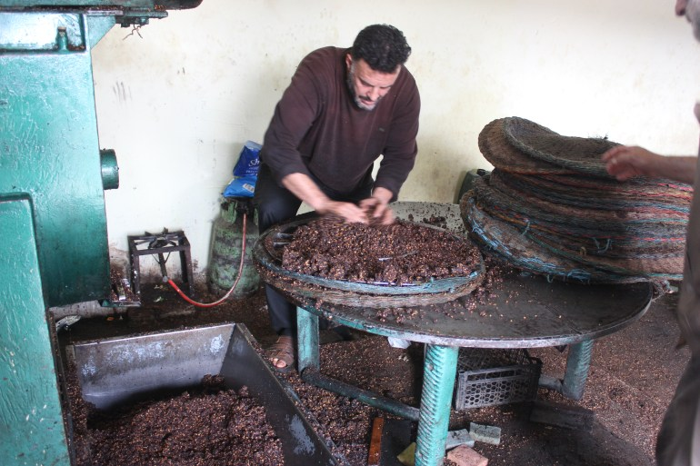
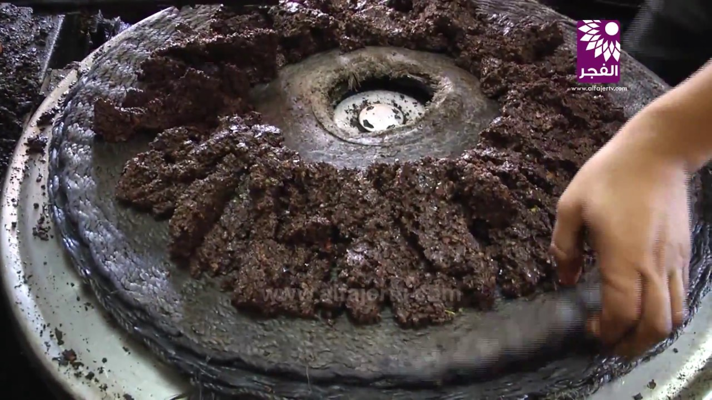
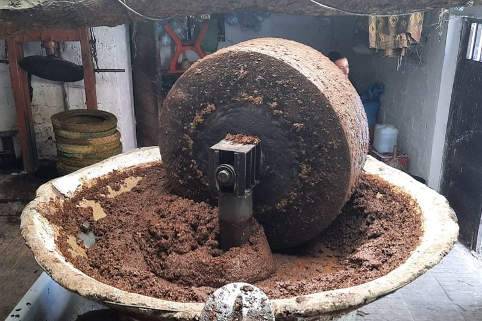
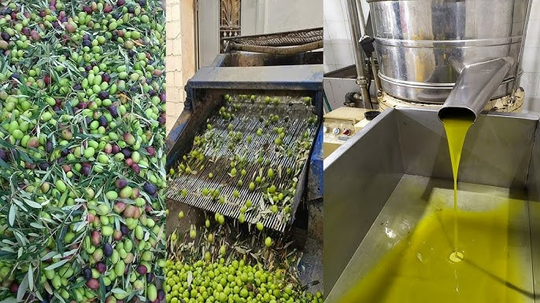
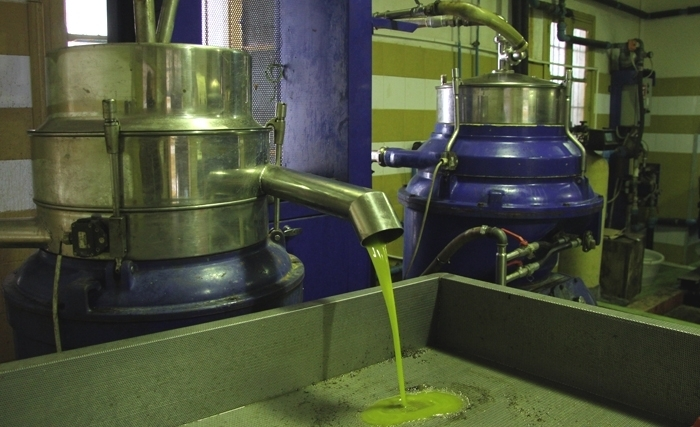
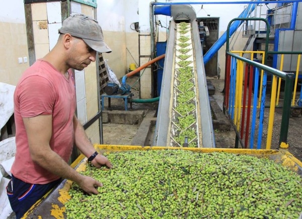

🌿 Steps of the Traditional Method:
The traditional method relies on simple, artisanal techniques that respect the fruit and nature:
Manual Harvesting: Olives are picked by hand or with sticks.
Cleaning: Fruits are washed with clear water to remove impurities.
Crushing: Olives are crushed under a stone mill to form a paste.
Pressing: The paste is placed in natural fiber bags and manually pressed.
Decantation: Oil naturally separates from water and solid residues.
Storage: Oil is stored in clay jars, away from light.
 |
 |
 |
This method produces oil rich in flavor, often used for its nutritional qualities and authenticity.
🫒🌿 Steps of the Modern Method:
The modern method relies on advanced equipment and precise process control:
Mechanical Harvesting: Using vibrating machines to shake olives from trees.
Automatic Washing: Olives are cleaned in industrial washers.
Stainless Steel Crushing: Fruits are crushed in metal grinders to form a homogeneous paste.
Controlled Malaxation: The paste is kneaded at regulated temperature to release oil.
Centrifugal Extraction: Rapid separation of oil, water, and solid residues.
Filtration and Storage: Oil is filtered then stored in stainless steel tanks, protected from air and light.
 |
 |
 |
This method produces high-quality olive oil, with better preservation and optimized production.
🫒📊 Comparison Between the Two Methods
| Aspect | Traditional Method | Modern Method |
|---|---|---|
| Tools | Stone mill, manual press | Stainless steel machines, centrifuges |
| Time | Long, artisanal | Fast, automated |
| Quantity | Low | High |
| Quality | Rustic, intense flavor | Pure, stable, filtered |
| Preservation | Less stable, stored in jars | Long-lasting, stored in stainless tanks |
🧪 Types of Olive Oil
Extra Virgin: Cold-pressed, less than 0.8% acidity, intense and fruity flavor.
Virgin: Cold-pressed, up to 2% acidity, milder flavor.
Refined: Treated oil, neutral taste, fewer nutrients.
🫒